창원 한복 부부사진 — 부부가 다시 나란히 서는 날의 마음
2026-10-22 발행
창원 한복 부부사진은 가족사진과 조금 다릅니다. 가족사진은 모두가 함께 서는 사진이고, 부부사진은 두 사람만 남는 사진입니다. 아이들이 크고, 부모님이 돌아가시고, 어느 날 문득 두 사람만 남은 날이 있습니다. 그날 다시 한복을 입고 나란히 서 보는 것입니다.
한복 부부사진을 찾으시는 이유는 저마다 다릅니다. 결혼기념일이라서, 회갑이나 칠순을 앞두고 있어서, 리마인드웨딩을 하려다가 한복으로 바꾸셔서. 이유가 없어도 괜찮습니다. 두 사람이 같은 옷을 입고 같은 자리에 서는 일은 그 자체로 충분합니다.

첫 사진은 마당입니다. 아내가 연한 파란 치마에 흰 저고리를 입고, 남편이 회색 두루마기를 입고 아내 어깨에 손을 얹었습니다. 남편이 저 앞 산을 가리키고 있습니다. 이런 사진은 지시해서 나오지 않습니다. 두 사람이 서로에게 무언가를 말하는 동안 저는 조금 떨어져서 기다립니다.
부부사진에서 가장 중요한 것은 손입니다. 두 사람이 손을 잡고 있으면 사진이 한 편으로 읽힙니다. 손을 잡는 방식도 사람마다 다릅니다. 손가락을 깍지 끼는 부부, 손등을 덮는 부부, 팔짱을 끼는 부부. 저는 어느 쪽이 좋다고 정해 두지 않습니다. 두 사람이 평소에 하던 방식이 사진에 남아야 합니다.
창원에서 한복 부부사진은 언제 찍는 게 좋을까요? 결혼기념일이나 회갑·칠순이 있는 달이면 그날에 맞추면 됩니다. 정한 날이 없으시면 사람이 적은 평일 오전이 좋습니다. 마음이 급하지 않고, 옷을 고르는 시간도 넉넉합니다. 두 사람만 오시면 준비도 짧아서 반나절이면 충분합니다.
리마인드웨딩과 헷갈리시는 분이 많습니다. 리마인드웨딩은 드레스와 턱시도를 다시 입는 촬영이고, 한복 부부사진은 한복으로 두 사람이 서는 촬영입니다. 두 가지를 한 날에 이어서 하실 수도 있습니다. 드레스를 입고 몇 장, 한복으로 갈아입고 몇 장. 사진첩에 두 가지 분위기가 함께 남습니다.
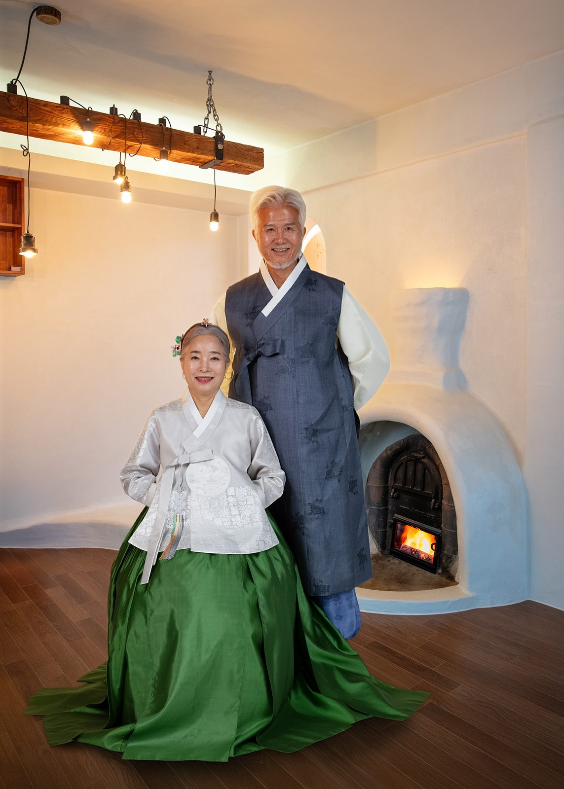
두 번째는 온돌방입니다. 아궁이에 불이 타고 있고 천장에는 나무 등이 매달려 있습니다. 아내가 초록 치마로 무릎을 꿇고 남편이 그 뒤에 섰습니다. 한복은 앉는 자세에서 가장 아름답습니다. 치마가 바닥에 부채처럼 펼쳐지고, 저고리 깃이 얼굴 아래에서 정돈됩니다.
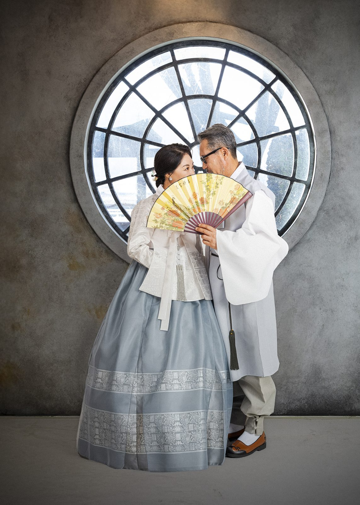
세 번째는 둥근 창입니다. 아내가 회청색 치마를 입고 부채를 펼쳐 얼굴 앞에 두었습니다. 남편이 뒤에서 아내를 감쌌습니다. 창은 사진의 액자 역할을 합니다. 둥근 창 안에 두 사람이 들어오면 배경이 아니라 하나의 그림이 됩니다. 부채는 한복 사진에서 가장 자주 쓰는 소품입니다.
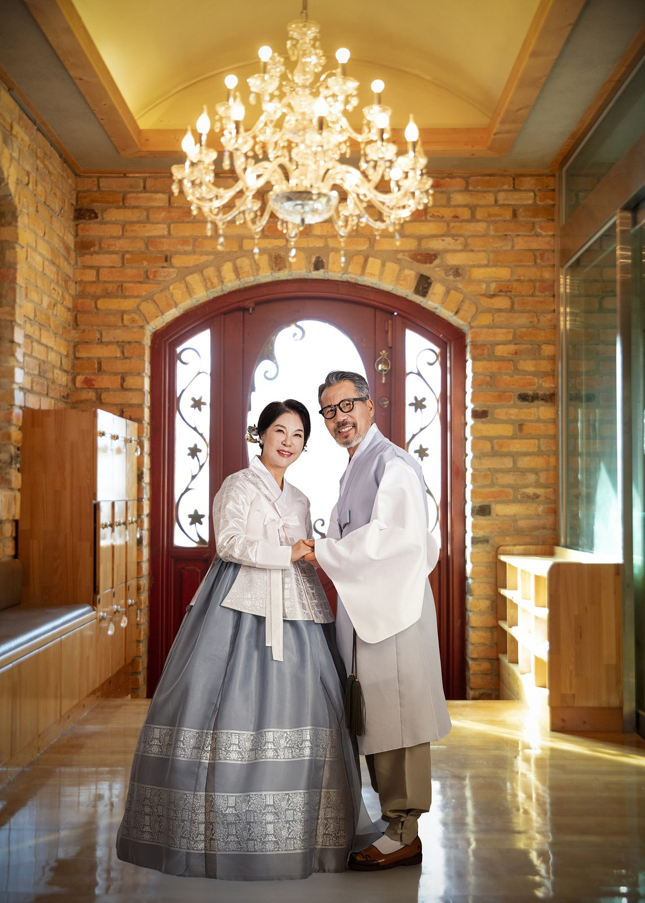
네 번째는 붉은 문 앞입니다. 벽돌 벽과 유리문, 천장의 샹들리에가 함께 들어옵니다. 한복은 이런 자리에서도 어색하지 않습니다. 오히려 서양식 문과 한복이 부딪히면서 사진이 살아납니다. 같은 옷을 입고도 배경을 바꾸면 이렇게 다른 사진이 나옵니다.
의상은 의상실에서 함께 고릅니다. 부부 한복은 두 사람의 색을 어떻게 묶느냐가 절반입니다. 아내가 분홍이면 남편은 연한 회색이나 베이지, 아내가 청록이면 남편은 남색이나 짙은 회색이 잘 맞습니다. 두 사람이 같은 색을 입으면 부부처럼 보이지만, 사진에서는 한 덩어리로 뭉쳐 보일 수 있습니다.
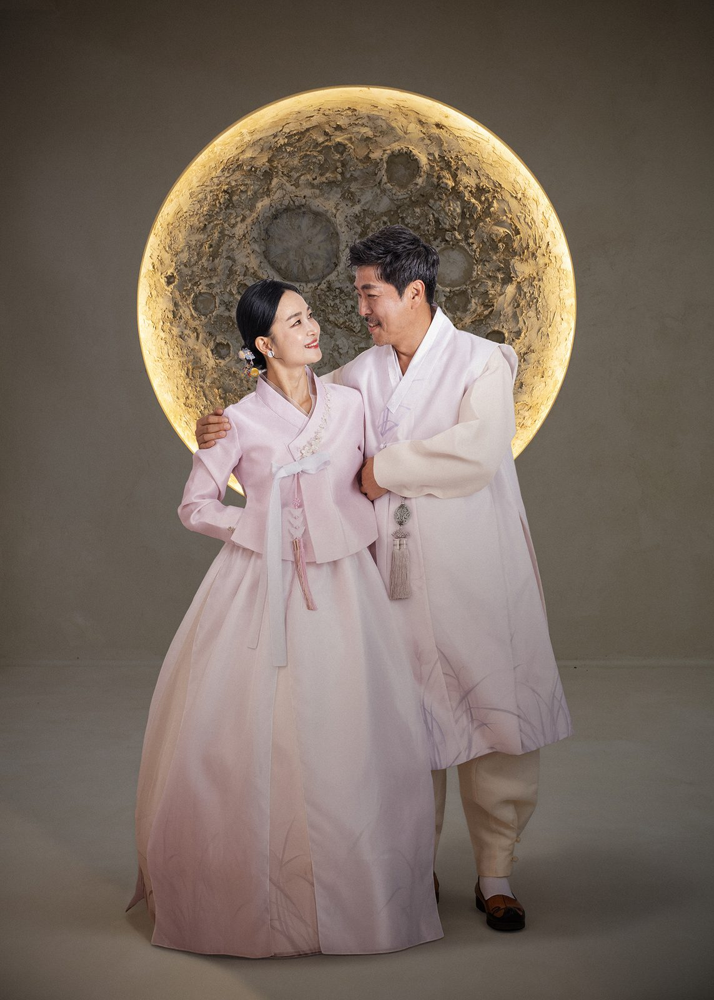
다섯 번째는 보름달 앞입니다. 커다란 달을 배경으로 두 사람이 서로를 봅니다. 분홍과 연분홍으로 색을 맞췄습니다. 이 자리는 조명을 달 쪽에 두고 사람을 어둡게 두는 방식입니다. 얼굴이 조금 어두워지지만 두 사람의 윤곽이 살아납니다. 사진은 밝은 것만 좋은 것이 아닙니다.
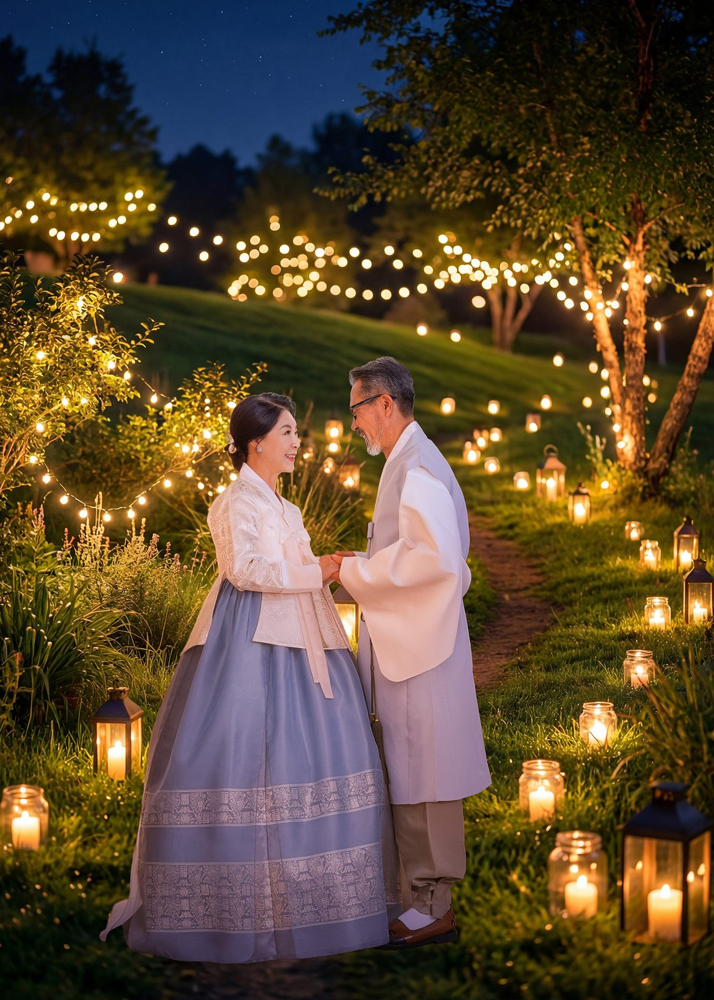
여섯 번째는 밤 정원입니다. 등불과 전구를 켜고 두 사람이 마주 봅니다. 밤 촬영은 낮보다 시간이 더 걸립니다. 빛을 한 자리씩 옮겨 가며 찍어야 하기 때문입니다. 대신 낮에 없는 사진이 나옵니다. 밤 정원 촬영은 지점과 계절에 따라 가능 여부가 다르니 예약하실 때 확인해 주세요. [확인 필요]
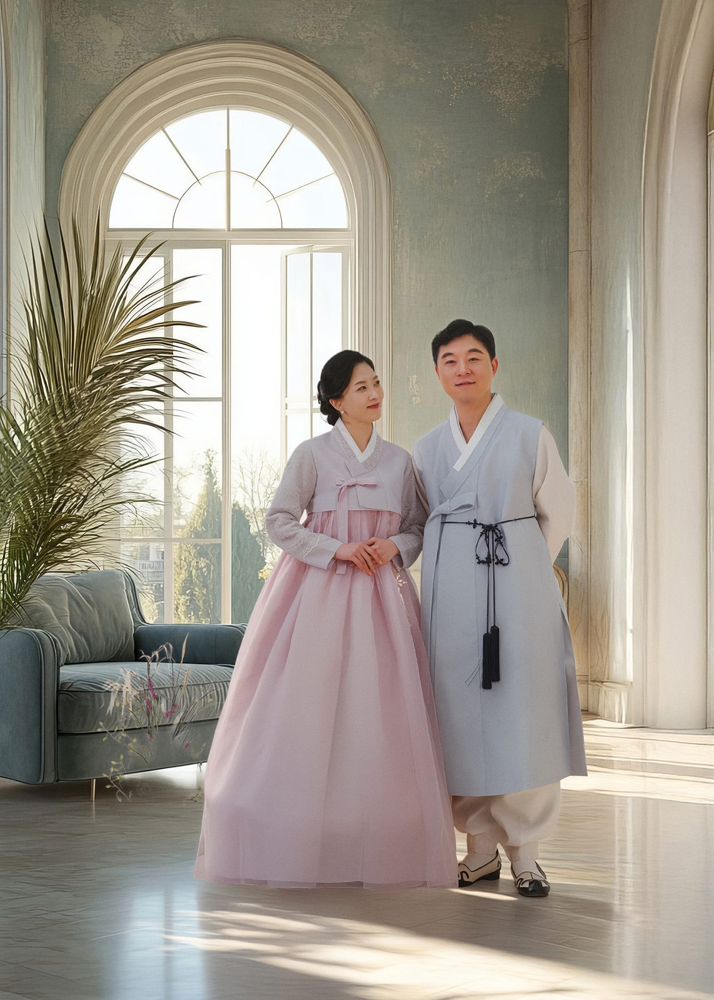
일곱 번째는 아치 창이 있는 방입니다. 아내가 연분홍 저고리에 분홍 치마를, 남편이 연한 청회색 두루마기를 입었습니다. 소파와 화분이 함께 들어와서 집 안 같은 분위기가 납니다. 부부사진은 스튜디오에서 찍어도 집처럼 보이는 사진이 좋습니다. 두 사람이 편안해 보여야 하기 때문입니다.
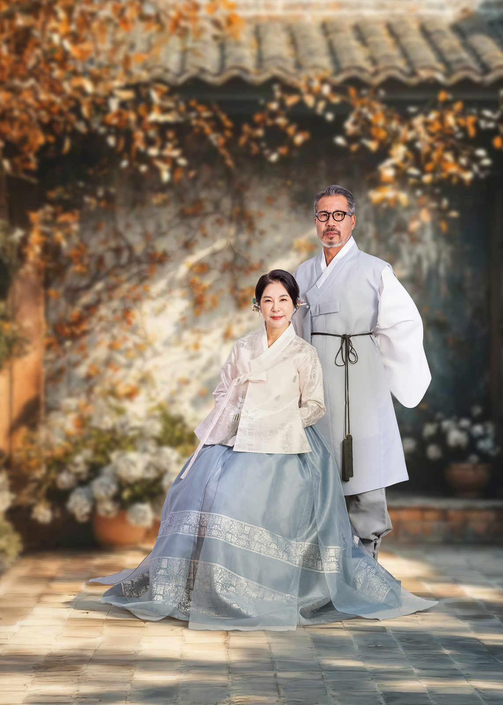
여덟 번째는 어르신 부부입니다. 가을 잎이 흩날리는 배경 앞에서 아내가 무릎을 꿇고 남편이 뒤에 섰습니다. 예순이 넘은 부부일수록 한복이 잘 어울립니다. 세월이 옷에 배어서 그런지, 같은 한복도 젊은 사람과 다른 무게로 보입니다. 이 컷은 두 분이 가장 좋아하시는 사진이 되곤 합니다.
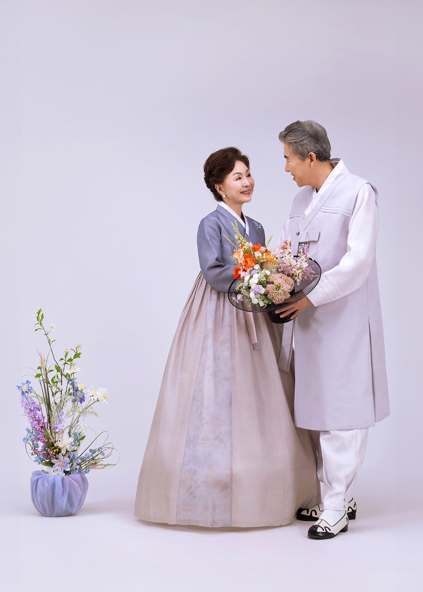
아홉 번째는 연보라 배경입니다. 아내가 꽃바구니를 들고 남편이 그 꽃을 봅니다. 두 사람이 같은 것을 보고 있으면 사진이 저절로 정돈됩니다. 부부사진에서 자주 쓰는 방법입니다. 꽃이나 찻잔이나 사진첩처럼, 두 사람이 함께 볼 수 있는 것 하나면 충분합니다.
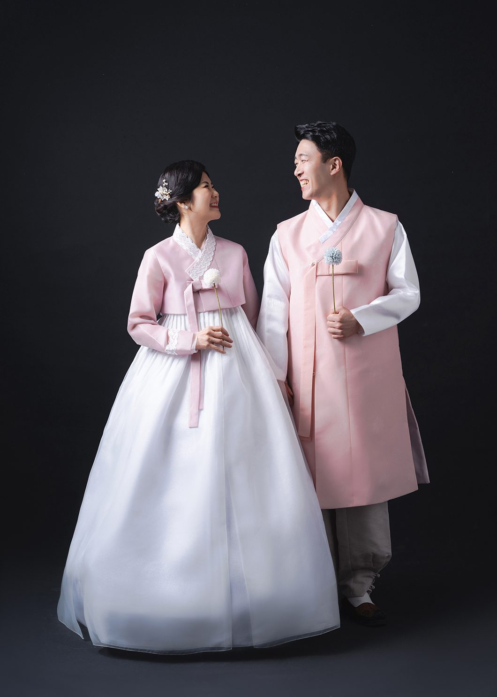
열 번째는 검정 배경입니다. 분홍 한복이 검정 위에서 아주 밝게 떠오릅니다. 검정 배경은 사진을 조용하게 만듭니다. 이 사진은 액자에 넣었을 때 벽에서 튀지 않습니다. 거실보다는 침실이나 서재에 잘 맞습니다. 같은 사진도 어디에 거느냐에 따라 다르게 보입니다.
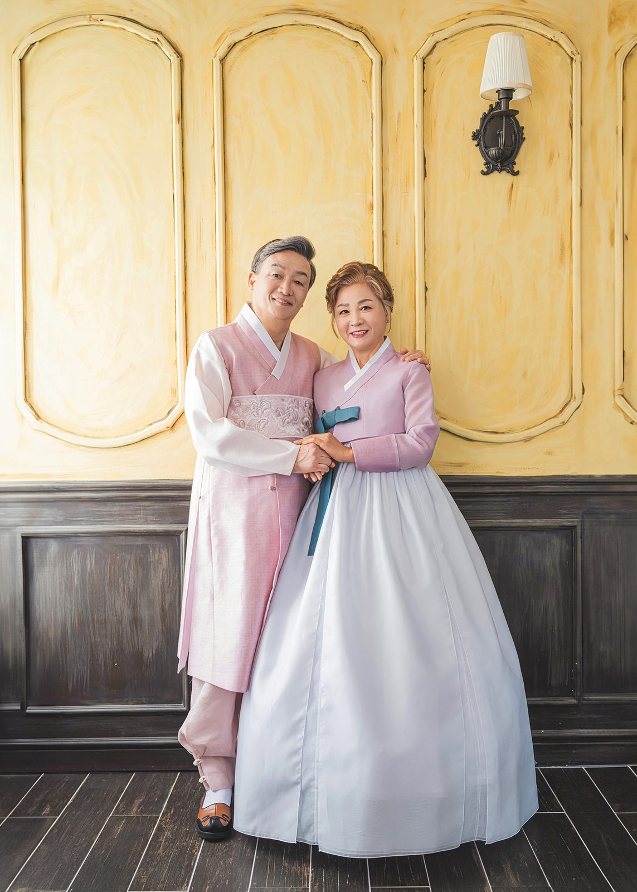
열한 번째도 어르신 부부입니다. 노란 벽 앞에서 두 분이 손을 잡고 서로를 봅니다. 이 사진에서 두 분은 거의 웃지 않습니다. 웃지 않아도 표정이 밝습니다. 사진을 찍을 때 "웃어 주세요"라고 하지 않는 이유가 여기 있습니다. 웃으라고 하면 어색한 웃음이 나옵니다.
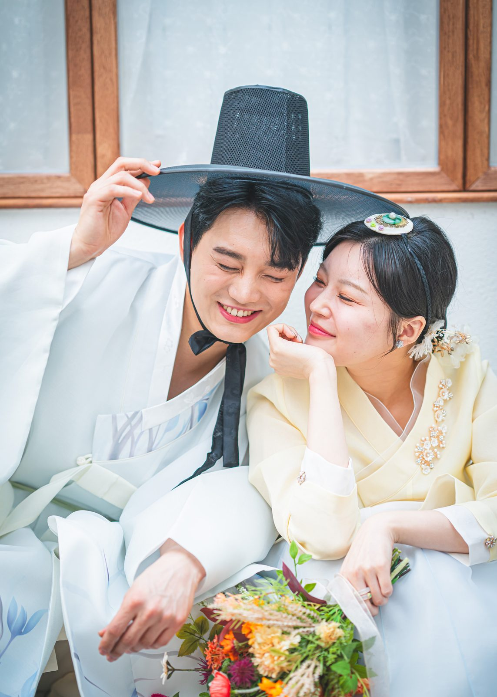
마지막은 가까이 붙어 찍은 컷입니다. 남편이 갓을 고쳐 쓰고, 아내가 그 모습을 보며 웃습니다. 이 사진은 두 사람의 얼굴이 크게 나옵니다. 부부사진을 오래 보면 결국 얼굴을 보게 됩니다. 옷과 배경은 잊히고, 그날의 웃음이 남습니다.
한복 부부사진은 두 사람이 결정하면 됩니다. 자녀분들에게 말씀하지 않으셔도 됩니다. 다만 사진을 보여 드리면 대개 자녀분들이 더 좋아합니다. 부모님이 젊었을 때의 사진을 한 장도 못 본 자녀들이 많기 때문입니다.
창원 한복 부부사진은 상남동 롯데빌딩 2층에서 찍습니다. 한복과 갓, 노리개, 부채는 의상실에서 대여합니다. 두 사람의 색과 원하시는 분위기를 미리 알려 주시면 옷과 자리를 준비해 두겠습니다. 결혼기념일이 아니어도 좋습니다. 두 사람이 나란히 서는 날이면 그날이 기념일입니다.
사랑이야기 스튜디오 창원점 / 주소: 경남 창원시 성산구 원이대로 652, 상남동 롯데빌딩 2층 / 전화: 창원점 055-287-8022, 의령점 055-574-3706 / 홈페이지: lovestorykim.com / 인스타그램: @lovestorychangwon / 운영: 김작가
자주 묻는 질문
Q. 부부만 찍어도 괜찮을까요?
A. 부부사진은 두 사람만 찍는 촬영입니다. 자녀나 부모님을 함께 모시지 않아도 됩니다. 두 사람의 옷과 자리만 정하면 되기 때문에 준비도 간단합니다.
Q. 한복과 소품은 준비해 가야 하나요?
A. 의상실에서 대여합니다. 부부 한복과 갓, 노리개, 부채가 준비되어 있습니다. 사이즈를 미리 알려 주시면 촬영 전에 맞춰 둡니다.
Q. 결혼기념일이 아니어도 찍을 수 있나요?
A. 그렇습니다. 회갑이나 칠순을 앞두고 오시는 분도 있고, 특별한 이유 없이 오시는 분도 있습니다. 두 사람이 나란히 서는 날이면 그날이 기념일이 됩니다.

오시는 곳
사랑이야기창원점
- 주소 경남 창원시 성산구 원이대로 652, 상남동 롯데빌딩 2층
- 전화 055-287-8022
- 영업시간 오전 10:00 ~ 오후 7:00
- 예약 전화 상담 · 카카오톡 채널
- 주차 건물 지하 주차장
김작가사진이야기 의령
- 주소 경남 의령군 궁류면 청정로 1188
- 전화 055-574-3706
- 영업시간 오전 10:00 ~ 오후 7:00
- 예약 전화 상담 · 카카오톡 채널
- 주차 전용 주차장
이 글에 한마디
댓글창을 준비하고 있습니다. 그동안 궁금한 점은 카카오채널로 남겨 주시면 바로 답변드립니다.
카카오채널로 한마디 남기기